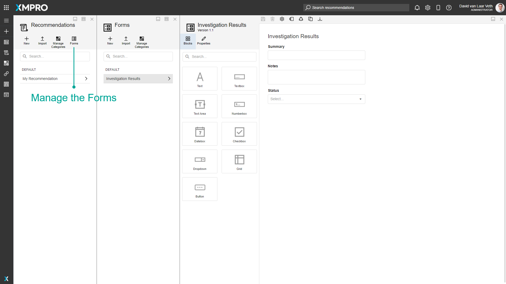
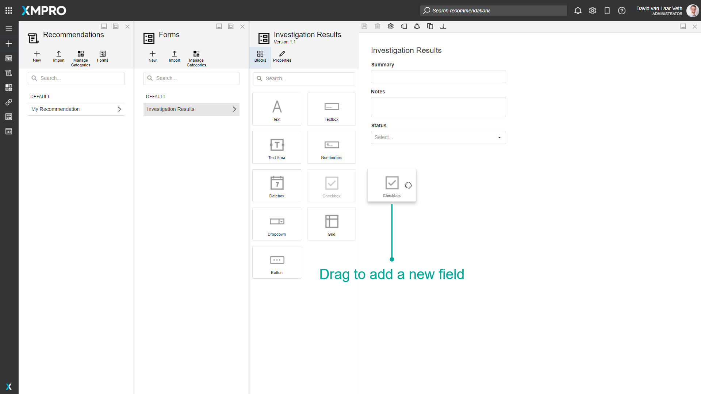
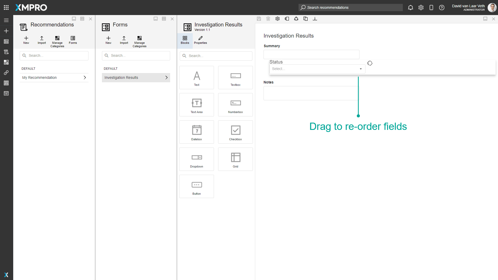
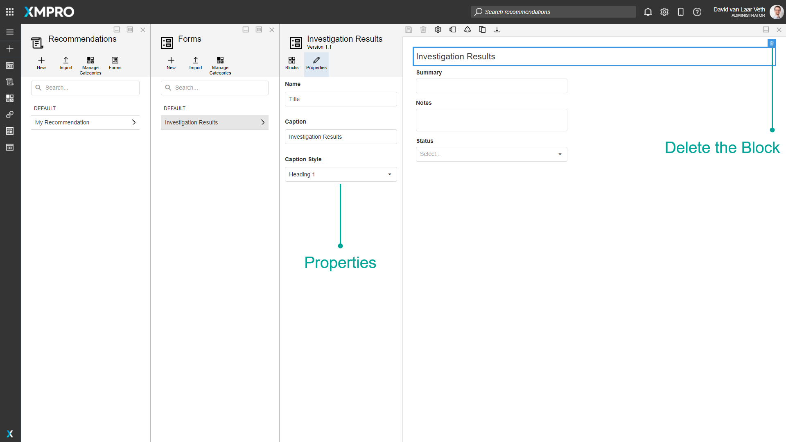

Form
A Form is a collection of fields that appear on Recommendation Alerts. Forms are how relevant information can be entered and changed over the course of resolving an Alert. Forms can also contain buttons that allow specific actions to be performed in other business systems, like creating a work order in your EAM system. The Action Request Agent in the Data Stream Designer will pass the data from your form to other systems.
When a Recommendation Alert is created from the Rule, the Rule's selected Form is used to determine the fields (Blocks) that will appear in the alert. Forms are managed through the Recommendations page.

The same form can be seen as created in a Recommendation Alert:

Category
Forms can be organized into different categories. This refers to the category under which the Form is found in the Form list. This category is separate from the App and Data Stream Categories.
Actions on the Form
The following Actions can be taken on a Recommendation Form:
| Action | Description |
|---|---|
| Blocks | Opens the list of Blocks that are available to the Form. |
| Properties | Opens the properties for the selected Block. |
| Save | Saves any changes made to the Form up to this point. |
| Discard | Discards any changes made to the Form up to this point. |
| Settings | Opens the Form Settings, where you can modify the Form's Name and Category or delete the Form. |
| Manage Versions | Versioning for the Form. |
| Manage Access | Allows you to manage which users are allowed to view or modify this Recommendation and the Recommendation Alerts created by this Recommendation. |
| Clone | Clones the Form as a new Form. |
| Export | Export the Form as an encrypted file. |
| Delete | Deletes the Form. |
Blocks
The following Blocks can be added to a Recommendation Form:
| Name | Description |
|---|---|
| Text | A control that displays text. |
| Textbox | A control for the user to input text. |
| Text Area | A control for the user to input a large amount of text (multiline). |
| Numberbox | A control for the user to input a numeric value. |
| Datebox | A control for the user to input a date. |
| Checkbox | A control that allows the user to tick an option. |
| Dropdown | A control that allows the user to select from a predefined list. |
| Grid | A control that displays tabular data, updated as a JSON Array by an Update Recommendation Agent in a Data Stream. It is read-only when viewed in App Designer. It is used to add information for users reviewing or resolving Recommendation Alerts, such as a Data Stream configured to listen for changes in an external work order system and update the Alert. |
| Button | A control that can be clicked to trigger an event or action. |
Blocks are added to the Form by dragging from the Blocks tab.

Blocks can be re-ordered by dragging them up and down

The properties of a Block are available in the Properties tab after clicking on a Block to select it. A Block can also be deleted by clicking on the delete button in the selection toolbar:

Block Properties
| Property | Description |
|---|---|
| Property | Description |
| Name | Name of the recommendation. This is usually one or two words that describe the form. Name is how the Block is differentiated for Data Stream Agents. |
| Caption | The caption is displayed above the Block. |
| (Text) Caption Style | The style of the text Block. Options include Heading 1 - 4, Body, Metric, and Small Text. |
| Read Only | A flag that determines whether the field will allow a new value to be added on the Alert. |
| Required | A flag that determines whether the Block must have a value before the Alert can be saved. |
| (Dropdown) Items | The items that are available for selection in the dropdown. Text is shown in the dropdown, and Value is what will be selected and saved. |
(Button) Button Style | The style of the button in the Recommendation Alert: Text: The button has no borders. The text color depends on the Button Type. Outlined: The button has a colored outline. The border color depends on the Button Type. Contained: The button has a colored background. The color depends on the Button Type. If the Button Type is Normal, it has a black outline. |
| (Button) Button Type | The color of the button in the Recommendation Alert: Danger: Red. Default: Blue. Normal: White or Black. Success: Green. |
Note
Number Selector automatically converts the entered value into a scientific notation if it is greater than 21 digits for an integer value and greater than 6 digits for a decimal value.
Further Reading
- How to Create and Manage Forms
- Action Requests: creating work orders in Data Streams with a Form button
Last modified: August 20, 2025